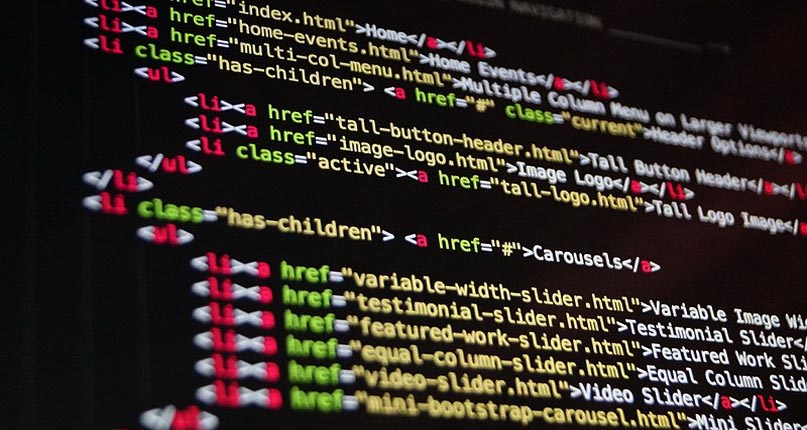
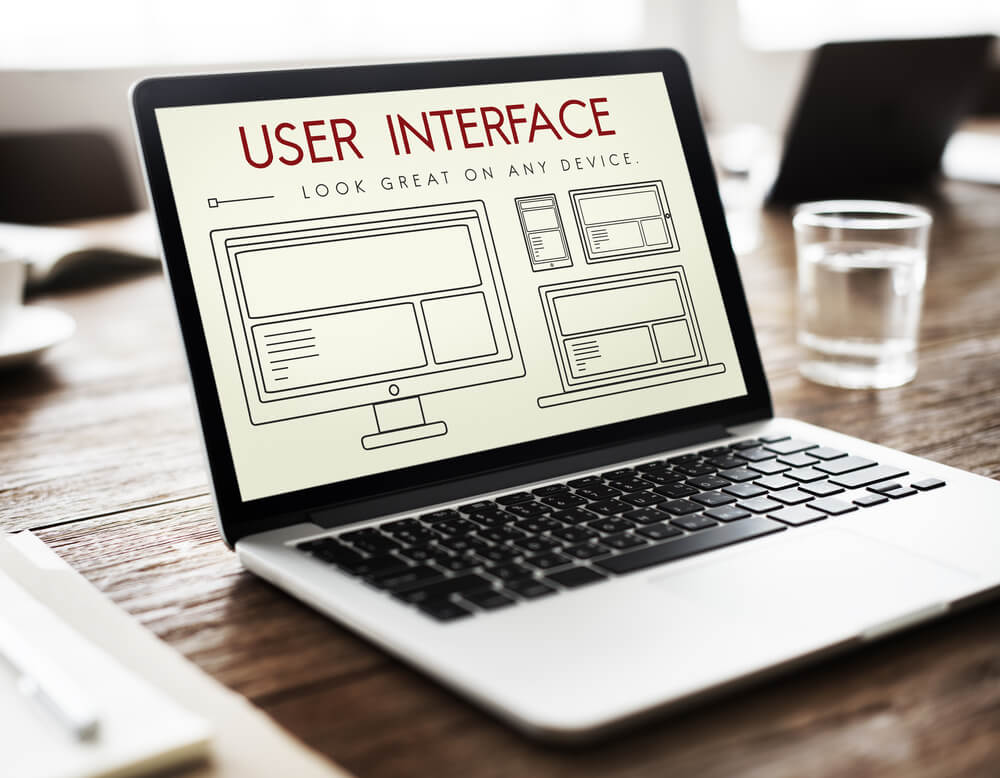
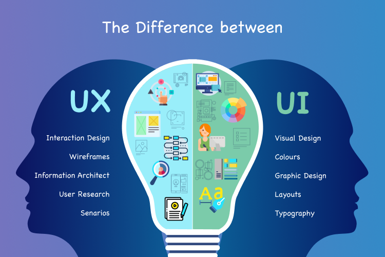
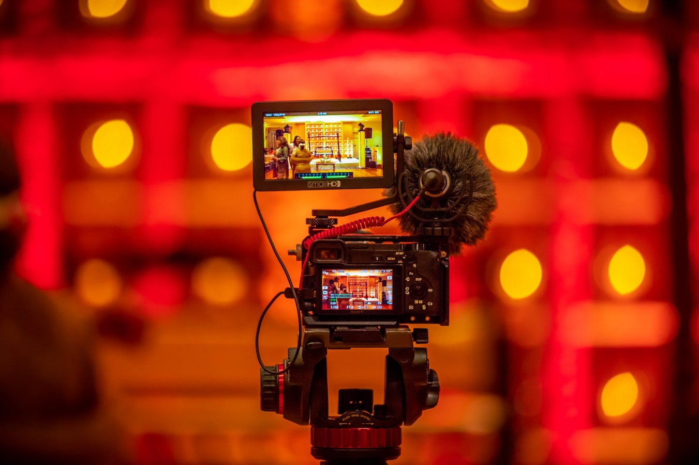
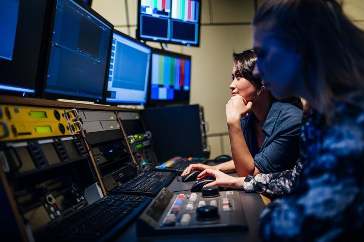

Design de Interface Digital para aplicativos sites entre
outros. Concepção prototipação produção
testes avaliação e documentação de projetos em design de interfaces. Problematização e contexto de
mercado. Experiência do usuário UX . Arquitetura da informação. Paradigmas e modelos de Interação
Homem Computador IHC . Ergonomia de interfaces acessibilidade e usabilidade nas relações usuário
objeto multimeio. Design de interação. Representação e expressão do projeto de design de interface
por meio de várias linguagens. Design para plataformas móveis aplicações mobile e suas
características. Softwares de edição e composição de interfaces. Fluxo de trabalho e processos
em design de interface. Gestão de produtos digitais e ambientes interativos.



— Criação em Audiovisual —
Pesquisa de processos e produtos audiovisuais. Projeto de
linguagem audiovisual. Produção Executiva
custos tempo pessoas e orçamentos . Estrutura funções e etapas do processo produtivo audiovisual.
Criatividade visual e sonora. Linguagem audiovisual gêneros e formatos audiovisuais. O roteiro suas
aplicações e tipologias. Criação narrativa em audiovisual. Produção de narrativas audiovisuais
multimidiáticas a partir do estudo de seus elementos cenário personagens ações e suas aplicações
na comunicação. As etapas de roteirização insights ideia storyline sinopse argumento pré roteiro
escaleta roteiro literário e técnico. Decupagem de roteiro. Processos de pré produção. Planimetria
storyboard. Captação de som e de imagens. Decupagem do material bruto seleção organização e
sincronização. Tipos de Montagem corte tempo e ritmo. Linguagem sonora o som e o sentido a dimensão
sonora narrativas sonoras e o som como elemento constitutivo da mensagem. Desenho de som e trilha
sonora princípios de diálogos folley e efeitos. Sistemas de gravação reprodução e sincronia de áudio.
Técnicas de edição de som e mixagem. Decupagem sonora criação roteirização boletim de som produção
locução gravação mixagem e edição de projetos sonoros. Produção de áudio para rádio televisão cinema
e Internet. Sistema de classificação indicativa. Plano de distribuição e veiculação de projetos
audiovisuais. Pós produção para o audiovisual. Teste de audiência. Recursos e técnicas para tratamento
fílmico. Finalização de material. Preservação e memória audiovisual.

